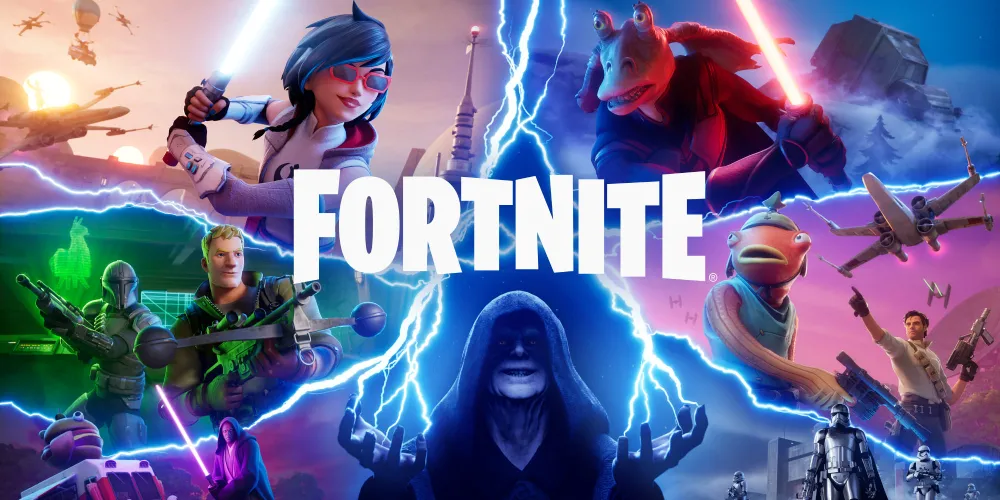

Role: Gameplay Programmer
- Time: May 2025 - March 2026
- Full Time
- UEFN | Verse
- Platform: PC, Xbox, Playstation, Nintedo Switch
- Tool: UEFN, Visual Studio
- Duration: 11 months
At Epic Games, spacifically Fortnite has a development tool for creators. UEFN (Unreal Editor for Fortnite) is a built in tool for users to creator custom experiances and games for player. My role as a gameplay programmer was developing templetes for game styles for users to learn how to use Verse, UEFN internal coding API. As well has experimenting within internal projects on upcoming features and experiance.
Star Wars: Narrative and Roleplaying
My latest work was the Narrative and Roleplaying template, which demonstrates how players can use character devices, NPC attitude systems, and Verse scripting to create interactive experiences. My role was to create a custom dialog device that allows the player to interact with characters. Player choices can initiate quests, progress objectives, or modify character reputation. In addition, I developed a quest manager system that connects dialogue systems, updates objectives, and manages player reputation.
Additional Documentation- Developed a modular dialogue system for NPC interactions
- Engineered a scalable quest management system using Verse
- Collaborated with game designers to implement UI systems for quest tracking and reputation
Alpha Tycoon
During my time at Epic Games I implemented dialogue systems, quest mechanics, and UI systems using Verse. I also prototyped gameplay features for internal projects. During my time at Epic Games I collaborated with designers and artist on a Tycoon template designed to demonstrate resource systems, custom shops, and harvester mechanics. Developed UI systems for harvesters, displaying resource generation, system status, and upgrade paths.
- Programmed harvester UI for obtaining passive rewards and upgrades
- Collaborated with designers and artist on UI design and UX